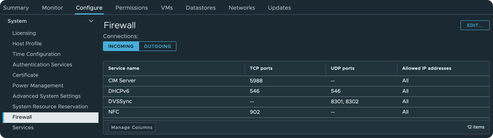
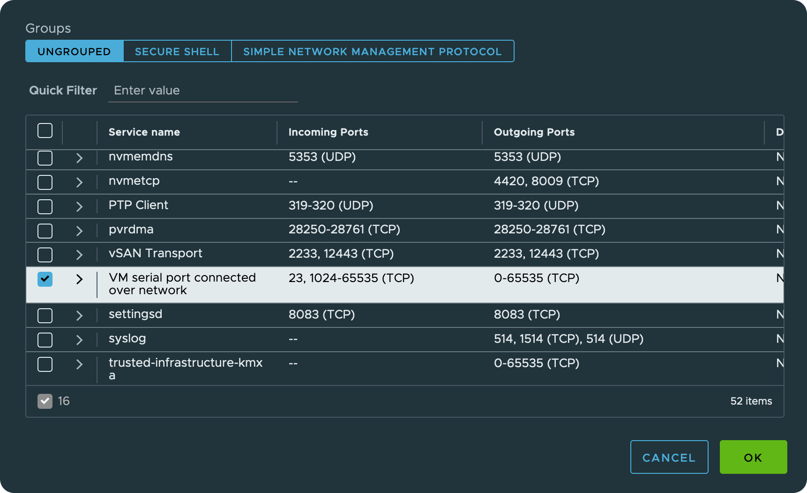
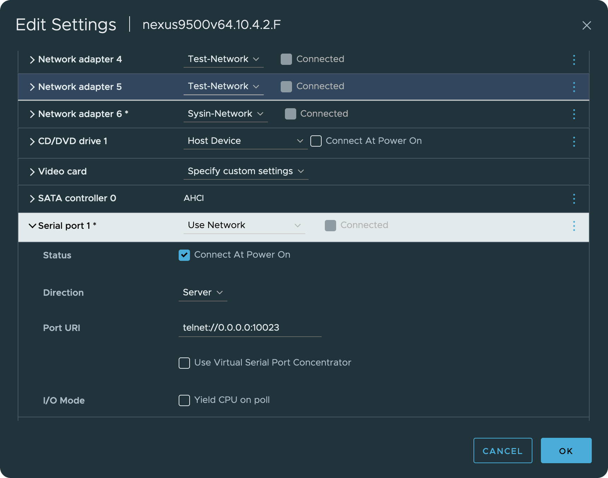
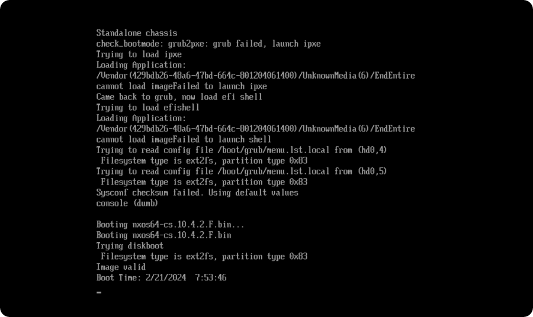
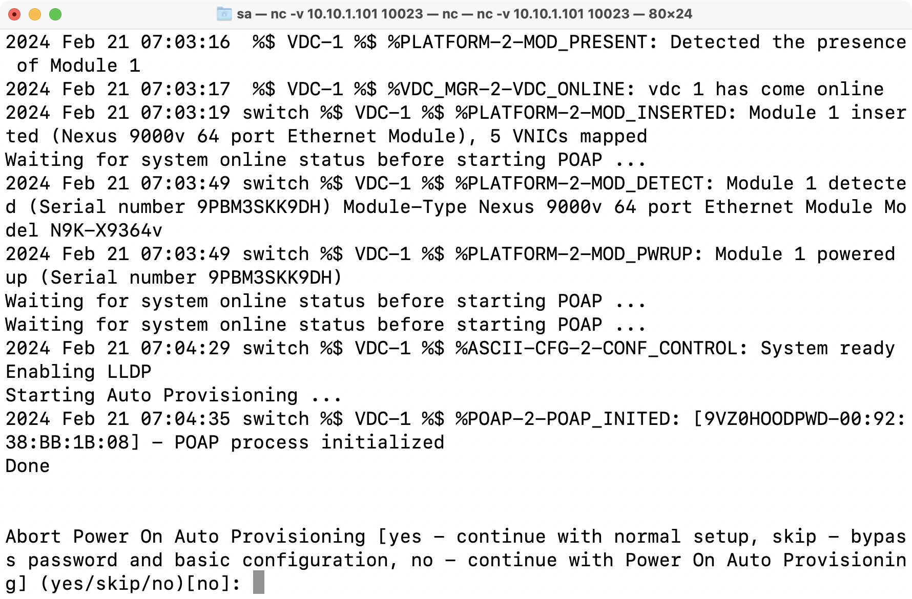

请访问原文链接：在 ESXi 上运行 Cisco Nexus 9000v (NX-OS 10) 查看最新版。原创作品，转载请保留出处。
作者主页：sysin.org
Nexus 9000v 概述
Cisco Nexus 9000v 是虚拟化的 Nexus 9000 NX-OS 交换机，用于在虚拟化中构建和测试网络原型环境，是学习 Cisco NX-OS 和 SDN 的便捷途径。
平台系列和资源要求
从 Cisco NX-OS 版本 9.3.3 (sysin) 开始，Nexus 9000v 已转变为具有两个版本的平台系列：Nexus 9300v 和 Nexus 9500v。
- Nexus 9300v 代表一个虚拟的非模块化交换机，包括一个带有 64 个虚拟接口的线卡。
- Nexus 9500v 代表虚拟模块化交换机，最多可支持 16 个线卡和 400 个虚拟接口。
Nexus 9300v 规格
Form-Factor
| Component/Parameter | Specification |
|---|---|
| Usage | Simulation |
| Binary | Same as NX-OS Hardware |
| Management Interface | 1 |
| Line Cards | 1 |
| Line Card Interfaces | 64 |
Resource Requirements
| Resource | Specification |
|---|---|
| Minimum RAM | 10.0 G (basic bootup) |
| Recommended RAM | 12.0 G (depending on the number of features) |
| Minimum vCPUs | 1 |
| Recommended vCPUs | 2 |
| Minimum vNICs | 1 |
| Maximum vNICs | 65 |
Nexus 9500v 规格
Form-Factor
| Component/Parameter | Specification |
|---|---|
| Usage | Simulation |
| Binary | Same as NX-OS Hardware |
| Management Interface | 1 |
| Line Cards | Up to 16 |
| Line Card Interfaces | Up to 400 interfaces in the KVM/QEMU environment |
Resource Requirements
| Resource | Specification |
|---|---|
| Minimum RAM | 10.0G (basic bootup with one line card; 1.2G for each additional line card) |
| Recommended RAM | 12.0G (depending on the number of features) |
| Minimum vCPUs | 4 (if you configure 16 line cards, we recommend 6 vCPUs) |
| Minimum vNICs | 1 |
| Maximum vNICs | 400 interfaces in the KVM/QEMU environment |
支持的 Hypervisor
Nexus 9000v 10.4.x 系列官方系统要求：
- KVM/QEMU 4.2.0
- ESXi 8.0
- Vagrant 2.3.7（VirtualBox 7.0）（仅有 9300v 版本，不支持 9500v）
以上为官方列出版本要求，并非严格限制。
本文描述在 VMware 产品中部署。可支持如下版本。
建议在以下版本的 VMware 软件中运行（Linux OVF 无需本站定制版可以正常运行，macOS 虚拟化如果不是 Mac 必须使用定制版才能运行，Windows OVF 需要定制版才能启用完整功能）：
- VMware vSphere：
- VMware ESXi 9 or with driver & vCenter Server 9 & VCF Operations 9
- VMware ESXi 8 or with driver & vCenter Server 8
- VMware ESXi 7 or with driver & vCenter Server 7
- macOS：VMware Fusion
- Linux：VMware Workstation for Linux
- Windows：VMware Workstation for Windows
对于 VMware Fusion 或者 VMware Workstation，另有文章描述：
使用 VMware vSphere 部署
导入 OVA
支持 vSphere Client 和 ESXi Host Client，本文相关截图使用 vSphere Client。
过程略。
编辑 vNIC
- 第一个网卡用作管理口 m0（mgmt0），使用 VM Network（非必须）
- 其他网口（数据接口），分别放到不同的网络
- 数据接口所在虚拟交换机需要开启混杂模式（Promiscuous mode）
添加或者编辑虚拟串口
VMware ESXi 中直接编辑现有网络串口即可。
1、开启防火墙规则：ESXi 配置 – 系统 – 防火墙，启用防火墙规则：VM serial port connected over network 23, 1024-65535 (TCP)


2、编辑串口如下：
- 编辑虚机，选择 串行端口（Serial Port），类型：通过网络访问 (User Network)，方向：服务器（虚拟机侦听连接）
- 端口 URL：
telnet://telnet://0.0.0.0:端口（端口应在防火墙开启的端口范围），或者telnet://ESXi-IP:端口 - vSPC (Use Virtual Serial Port Concentrator) 是使用 vMotion 时的可选项 (需要启用防火墙规则 VM serial port connected to vSPC)，如果没有 HA 可以忽略。

虚机默认 EFI 引导
Boot Options 默认为 EFI。
编辑 vmx 文件（或者 vm 高级选项），添加：efi.serialconsole.enabled = “TRUE”
启动虚拟机
启动状态如下：

连接虚拟串口
连接 ESXi 服务器 IP，端口使用前述配置的端口。
在 macOS、Linux（或其他类 UNIX 系统）下，使用 nc，例如：nc 10.10.1.101 10023，推荐！
等待虚拟机控制台界面显示：Boot Time: xxxx，连接虚拟串口，此时接管 Console 画面如下（尚未完成也可以，稍后自动出现）:

在 Windows 下使用 telnet，例如：telnet 10.10.1.101 10023，似乎不容易连接成功，不推荐。
在 Windows 下，可以使用 PuTTY，或者 MTPuTTY。
下面开始初始化配置了。
1 | Abort Power On Auto Provisioning [yes - continue with normal setup, skip - bypass password and basic configuration, no - continue with Power On Auto Provisioning] (yes/skip/no)[no]:yes <---- 这里 yes |
进入登录提示，输入上述用户名 admin 和密码。
必要配置
配置管理 IP
1 | conf t |
在 vrf management 配置缺省路由：
1 | vrf context management |
配置 m0 IP 地址后，然后使用 ssh 登录管理
配置启动映像
以下映像名称为 nxos64-cs.10.2.5.M.bin，根据实际版本修改。
1 | conf t |
默认 ssh 开启
1 | 查看 telnet 是否启用（默认禁用） |
创建一个新用户（可选）
1 | username sysadmin password <password> role network-admin |
下一步
以后可以直接使用 SSH 访问，串口可用于 SSH 无法访问之时进行问题排查。
请访问官方文档，开启你的 Nexus 之旅：
Cisco Nexus 9000 Series Switches Configuration Guides
小贴士：开启 shell 访问，可以看到 NX-OS 10 是基于 Linux kernel 4.19（10.2.x 开始为 5.10）。
1 | show feature | grep bash |
相关软件下载
Cisco Nexus 9000v：Cisco Nexus 9000v Switch

文章用于推荐和分享优秀的软件产品及其相关技术，所有软件默认提供官方原版（免费版或试用版），免费分享。对于部分产品笔者加入了自己的理解和分析，方便学习和研究使用。任何内容若侵犯了您的版权，请联系作者删除。如果您喜欢这篇文章或者觉得它对您有所帮助，或者发现有不当之处，欢迎您发表评论，也欢迎您分享这个网站，或者赞赏一下作者，谢谢！
 支付宝赞赏
支付宝赞赏  微信赞赏
微信赞赏赞赏一下
敬请注册！点击 “登录” - “用户注册”（已知不支持 21.cn/189.cn 邮箱）。 请勿使用联合登录（已关闭）。